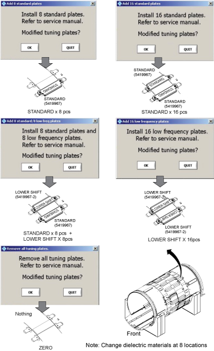
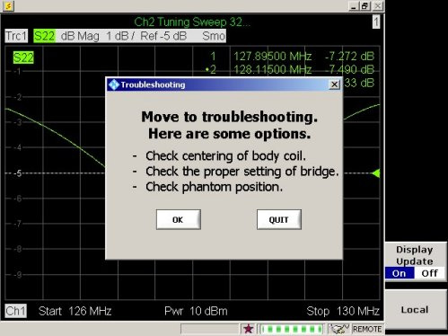

- 00000018WIA307EBE20GYZ
- id_131065303.14
- Oct 1, 2025, 8:35:58 PM
Body Coil Tuning (Network Analyzer Kit 5336593-3 or Later)
Prerequisites
| Required persons | Preliminary requirements | Procedure | Finalization |
|---|---|---|---|
| Not Applicable | Not Applicable | Not Applicable |
| Item | Quantity | Effectivity | Part number | Manufacturer |
|---|---|---|---|---|
| Network Analyzer Service Tool Kit | 1 | - |
5336593-3 or 5336593-4 | - |
| Body Loader with Sphere Phantom | 1 | - |
2371511 | - |
| ||||||||||||
| Condition | Reference | Effectivity |
|---|---|---|
|
must be done. | - | - |
|
Cradle is not located in the magnet bore. | - | - |
|
Bridge is installed in magnet bore. | - | - |
|
Phantom is set-up correctly (System Pre-setup for Tuning). | - | - |
|
Cables are connected correctly (Tuning Cable Connection (Equipment Setup)). | - | - |
|
Driver module DD Bias is in Body Mode (-13.6 VDC unloaded, ~2.6 VDC loaded; exact voltages are not critical). | - | - |
|
Body Coil Temperature matches magnet room temperature (HEC air flow — ON) for a minimum of 15 minutes. | - | - |
About this task
This procedure is for network analyzer kit 5336593-3 or later.
Body coil tuning is performed by adjusting variable capacitors (VC1, VC2, VC3) to tune f1, f2, f3, and MagS21 according to the network analyzer screen. If it is difficult to adjust parameters by variable capacitors, replacement of dielectric material might be required (also according to the network analyzer screen).
| STEP | PROCEDURE | SECTION |
| 1 | Start | |
| 2 | System Pre-setup for Tuning | System Pre-setup for Tuning |
| 3 | Calibration of Network Analyzer | Calibration of Network Analyzer |
| 4 | Tuning Cable Connection (Equipment Setup) | Tuning Cable Connection (Equipment Setup) |
| 5 | Perform Body Coil Tuning per Network Analyzer Navigation | Body Coil Tuning using Network Analyzer Navigation, Further Adjustment, Troubleshooting |
| 6 | Finalization | Step 1 |
System Pre-setup for Tuning
Procedure
- Note The following process must be used to tune the coil to specification. However, if the current tuning values of a particular coil are wanted, the original macro can be utilized.Perform the following sub-steps to prepare a body coil scan on the scan window to set up driver module body bias mode.
- On the exciter/ref clock module located in the PEN cabinet, set the RF Enb switch to down (Disable).
Figure 1. Exciter/Ref Clock Module 
- Dock the patient table.
- At the magnet control panel, press the In button to advance the cradle into the bore until the enclosure display indicates 800 mm.
- At the magnet control panel, press Alignment Light. Then, press Landmark and Advance to Scan to advance the empty cradle to the magnet isocenter.
- At the operator console, set up any body coil scan on the scan window to set up the driver module bias mode. The following steps are an example of body coil scan setup:
-
Click New Patient.
-
Enter geservice for Patient ID and 111 for Weight. Then, click Start Exam.
-
In the Protocol Selector, select Service from Protocol Library. Select snr_check and SNR Body Axial, FuncChk:Sys. Then, click > (right arrow). The protocol is transferred to the right field (Multi Protocol Basket).
-
Click Accept for Protocol Selector.
-
Click Save Rx to download body coil scan parameters.
-
Click Scan and select Manual Prescan from the menu.
-
Allow the scanner to pulse once, then select Done in the Manual Prescan window.
The driver module should now be supplying correct DC bias for tuning the body coil (-13.6VDC).
-
From the pull down menu on the scan window (End/End Exam), select End Exam.
-
- Use the emergency release latch on the cradle to unlatch the cradle from the LPCA, and then pull the cradle back onto the patient table to the Home position.
- At the magnet control panel, press the In button to drive the LPCA out of the magnet bore to the end of the rear bridge.
- Undock the patient table and place it to the side.
- On the exciter/ref clock module located in the PEN cabinet, set the RF Enb switch to down (Disable).
- Remove the bridge cover, right center cover, and right rear cover.
Figure 2. Remove Covers 
- Place body loader with phantom on the bridge and push it to the magnet center so that the front edge of body loader is 835 mm (33 inches) away from the front edge of the bridge. The loader and phantom assembly will sit on the belt path notch and are centered left-to-right on the bridge.
Figure 3. Body Loader Setup 
Calibration of Network Analyzer
Procedure
Connect the bias T at Port 1 and Port 2. Do not connect the bias cable at this time.CAUTION 
Figure 4. Bias T installation 
Notice NotePower ON the network analyzer. If no power is seen, confirm that the AC power switch on the rear of the unit is in the 'I' position.It is recommended that you connect a mouse to one of the USB ports on the network analyzer.
If not using the mouse, use the hard keys. For example, select the Menu hardkey and then use the arrow <> hardkeys to navigate and highlight, and the ENTER hardkey to select from menu.

Figure 5. Power ON 
- Connect N(m) to N(m) coaxial cable to bias T of Port 1.
Figure 13. Cable Connection 1  Note
NoteDo not touch cable ends, and minimize human interaction during network analyzer calibration, because this can change the impedance of the calibration setup.
Also it is best to not cross the cables, and route them so that they are parallel and separated from each other as much as possible.
Note It is recommended that the 50 ohm load (Match Standard) be measured with a DVM to confirm that it is operational (50 ohms +/- 5 ohms). Connecting it to the end of BNC-f to BNC-f adapter or BNC-f to N-m adapter and measuring through opposite end of adapter sometimes provides the most reliable electrical connection for measurement. - Connect port 1 and port 2 cables through female barrel.
Figure 18. Cable Connection 2 
Tuning Cable Connection (Equipment Setup)
Procedure
Remove cables from the DTRS switch for J2, J7, J8, and J3.Warning 
Figure 21. Tuning Cable Connection 
Body Coil Tuning using Network Analyzer Navigation
Procedure
Further Adjustment
About this task
This procedure is required if the following screen displays.
Procedure
- Change dielectric material according to the message.
Figure 39. Change Dielectric Material 
Note The body coil FRU includes dielectric materials for adjustment, so no kit needs to be ordered. If dielectric material is required after XRMw replacement, order Dielectric Material FRU Kit (5423650).NoteWhen replacing dielectric material to Standard x 8 pieces or Standard x 8 pieces + Lower Shift x8 pieces, the order is important. Follow the illustration below.
Figure 40. Dielectric Material Order 
After changing the dielectric material, install the body coil by reversing the removal. See RF Body Coil Replacement.Notice

Troubleshooting
Procedure

-
Perform Body Coil Centering.
-
Confirm bridge alignment and height are correct as described in the installation manual.
-
Check phantom position.
-
Replace the body coil.
Finalization
Procedure
- On the exciter/ref clock module in the PEN cabinet, set the RF Enb switch to up (Enable).
Figure 42. Exciter/Ref Clock Module